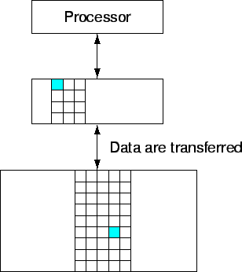
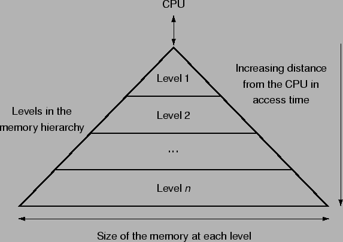

ในการพัฒนาโปรแกรมจากแรกเริ่ม นักเขียนโปรแกรมคาดหวังระบบคอมพิวเตอร์ที่มีหน่วยความจำความเร็วสูงที่มีขนาดใหญ่มากๆ ในบทนี้เราจะกล่าวถึงวิธีการที่จะสร้างระบบหน่วยความจำที่ทำงานได้ประหนึ่งว่ามีหน่วยความจำขนาดใหญ่ไม่จำกัด
ถ้าเปรียบเทียบระบบหน่วยความจำ กับการอ่านหนังสือในห้องสมุด ตัวอักษรผ่านสายตาและสะกดเป็นคำในสมองของผู้อ่าน นั้นเปรียบเหมือนนำข้อมูลเข้ารีจีสเตอร์ของสมองที่อยู่ตรงหน้าผาก (ตามแต่ท่านใดจะสมมุติว่าจิตอยู่ที่ใด) จากการอ่านหนังสือก็ทำการอ่านหน้าต่อหน้า เมื่อหมดหน้าก็ทำการพลิกหน้าใหม่ การอ่านระหว่างอักษรย่อมเร็วกว่าการอ่านระหว่างบรรทัด และเร็วกว่าการอ่านระหว่างหน้า เราสามารถอ่านสลับไปมาระหว่างหน้า บรรทัด และตัวอักษรได้ตามความต้องการ ถ้าต้องการข้อมูลอื่นสามารถทำการเปลี่ยนเล่มหนังสือที่อยู่บนโต็ะเป็นลำดับต่อไป จากตัวอักษร คำ บรรทัด หน้า เล่ม และเล่มต่างๆ ที่อยู่บนโต็ะ ผู้อ่านสามารถค้นเพิ่มเติมได้บนชั้นหนังสือในลำดับต่อไป ซึ่งในแต่ละลำดับชั้นใช้เวลาเพิ่มขึ้นเรื่อยๆ การที่สามารถมีหนังสือหลายเล่มบนโต็ะ เราสามารถลดเวลาในการเดินไปยังชั้นหนังสือได้
ในระบบหน่วยความจะก็ใช้วิธีคล้ายกันที่โปรเซสเซอร์สามารถเข้าใช้งานหน่วยความจำขนาดเล็กที่มีความเร็วสูง ได้ แต่เราไม่จำเป็นต้องสามารถเข้าถึงหน่วยความจำทั้งหมดได้เท่ากันด้วยความน่าจะเป็นที่เท่ากัน ซึ่งนำมาสู่สิ่งที่เรียกว่า Principle of Locality ซึ่งสามารถแบ่งออกได้เป็นสองระดับได้แก่
การเกิดขึ้นของ Locality เป็นสิ่งที่เกิดขึ้นตามธรรมชาติของการเขียนโปรแกรม เช่นการทำ Loop ที่คำสั่งเดิมหรือข้อมูลเดิมจะถูกนำมาใช้ครั้งแล้วครั้งเล่า ที่แสดงถึงการเกิดขึ้นของ Temporal Locality และโปรแกรมทีทำงานตามลำดับ มัลักษณะที่เป็น Spatial Locality หรือ Array ที่ถูกประมวลผลตามระเบียบวิธีก็มีลักษณะที่เป็น Spatial Locality
จาก Principle of Locality ผู้ออกแบบคอมพิวเตอร์ได้จัดระบบหน่วยความจำให้เป็นลำดับชั้น หรือเรียกว่า Memory Hierarchy ที่หน่วยความจำประกอบด้วยหลายลำดับชั้นที่มีความแตกต่างกันทั้งขนาดและความเร็วในการใช้งานข้อมูล หน่วยความจำที่มีความเร็วสูง มักมีราคาแพงกว่าหน่วยความจำที่ช้ากว่า ดังนั้นหน่วยความจำที่มีความเร็วสูงจึงมีขนาดเล็กกว่า
ในปัจจุบันมีเทคโนโลยีหน่วยความจำที่ใช้งานอย่างแพร่หลายสามลักษณะได้แก่ SRAM, DRAM, และ Magnetic Disk เทคโนโลยีที่ใช้ในหน่วยความจำหลักเป็น DRAM (Dynamic Random Access Memory) และหน่วยความจำที่อยู่ใกล้กับโปรเซสเซอร์อีกระดับหนึ่ง เป็นแบบ SRAM (Static Random Access Memory) ราคาต่อบิตของ DRAM นั้น ต่ำกว่า SRAM มาก เนื่องจาก DRAM มีความซับซ้อนของวงจรน้อยกว่า และสามารถบรรจุหน่วยความจำที่มีความหนาแน่นเป็นจำนวนมาก ลงไปในพื้นที่ซิลิกอน ในลำดับต่อมาเป็นการเก็บในระดับ Magnetic Disk ที่ช้าที่สุด
ในตารางข้างล่างแสดงค่าที่แตกต่างเชิงประสิทธิภาพ และราคาต่อ GB ในในปี 2547
| Memory Technology | Typical Access Time | $ per GB in 2004 |
| SRAM | 0.5-5 ns | $4,000-$10,000 |
| DRAM | 50-70 ns | $100= $200 |
| Magnetic Disk | 5,000,000-20,000,000 ns | $0.50-$2 |
เนื่องจากความแตกต่างระหว่างความเร็ว และราคาของหน่วยความจำแบบต่าง การออกแบบหน่วยความจำ จึงมักออกแบบเป็นลำดับชั้น ดังแสดงในรูป 7.1 ที่ซึ่งหน่วยความจำที่มีความเร็วสูงอยู่ใกล้โปรเซสเซอร์ และลดหลั่นลงมาโดยใช้หน่วยความจำที่ถูกลงและมีขนาดใหญ่ในระดับล่าง
ระบบคอมพิวเตอร์มีการจัดการในลักษณะเป็นลำดับขั้น โดยที่หน่วยความจำที่อยู่ใกล้โปรเซสเซอร์มากกว่าจะเป็น Subset ของหน่วยความจำในระดับต่อมา และข้อมูลทั้งหมดเก็บไว้ในหน่วยความจำล่างสุด ถ้าเราทำการใช้งานหน่วยความจำที่อยู่ห่างจากโปรเซสเซอร์ จะใช้เวลามากกว่าในการเข้าถึงหน่วยความจำ
ระบบหน่วยความจำมีหลายลำดับชั้น และข้อมูลที่ทำการคัดลอกส่งผ่านระหว่างลำดับชั้นที่ติดกัน ณ. เวลาใดๆ เมื่อส่งผ่านขึ้นหนึ่งระดับ เข้าใกล้โปรเซสเซอร์ จะเข้าถึงหน่วยความจำที่มีขนาดเล็กลงและมีความเร็วสูงขึ้น รูป 7.2 แสดงชุดของหน่วยความจำขนาดเล็กที่สุด ที่สามารถแสดง/หรือไม่ได้แสดงในระดับของหน่วยความจำสองลำดับชั้นใดๆ ซึ่งเรียกว่า Block หรือ Line
|

|
เมื่อข้อมูลได้ถูกสืบพบบนหน่วยความจำใรลำดับบน จะเรียกว่า ``Hit'' ถ้าข้อมูล ไม่ได้ ถูกค้นพบบนหน่วยความจำใรลำดับบน จะเรียกว่า ``Miss'' เมื่อเกิดการ Miss ขึ้น ระบบควบคุมหน่วยความจำจะทำการสืบค้นต่อไปในลำดับล่างที่ติดกัน อัตราการ Hit หรือเรียกว่า Hit Ratio เป็นอัตราส่วนของการทำเข้าถึงหน่วนความจำที่สามารถพบได้ในหน่วยความจำระดับบน ซึ่งค่าดังกล่าวใช้ในการวัดประสิทธิภาพของหน่วยความจำ ค่า Miss Rate (1 - Hit Rate) เป็นค่าอัตราส่วนของการสืบค้นไม่พบในหน่วยความจำระดับบน
เนื่องจากประสิทธิภาพของหน่วยความจำ ส่งผลกระทบโดยตรงต่อ ประสิทธิภาพของระบบคอมพิวเตอร์ ดังนั้นเวลาที่เกิดการ Hit หรือ Miss มีความสำคัญต่อการพิจารณา Hit Time หมายถึงค่าเวลาในการเข้าถึงหน่วยความจำในลำดับบนของระบบหน่วยความจำ ที่รวมถึงเวลาในการทำการตรวจสอบว่าเกิดการ Hit หรือ Miss หรือไม่ในการเกิดการเข้าถึงหน่วยความจำในแต่ละครั้ง Miss Penalty สื่อถึงค่าเวลาที่การนำ Block จากหน่วยความจำในลำดับต่อไปมาแทนที่ Block ในลำดับที่สูงขึ้นมาหนึ่งลำดับ บวกกับเวลาในการส่ง Block ดังกล่าวไปยังโปรเซสเซอร์ เนื่องจากหน่วยความจำในลำดับบนมีขนาดเล็กและความเร็วสูงกว่า ในลำดับต่อไป ซึ่ง Hit Time จะมีค่าน้อยกว่าการเข้าใช้หน่วยความจำในลำดับต่อไป ทำให้เป็นส่วนใหญ่ของการเกิด Miss Penalty
รูป 7.3 แสดงโครงสร้างของลำดับชั้นของหน่วยความจำ เมื่อระยะห่างระหว่างหน่วยความจำและโปรเซสเซอร์เพิ่มขึ้น ขนาดของหน่วยความจำจะเพิ่มขึ้น และ ความเร็วจะลดลง (ใช้เวลาเพิ่มขึ้น)
|

|